Memahami Revisi ISO 9001:2025 dan Dampaknya bagi Organisasi
Standar ISO 9001 mengalami pembaruan signifikan. Pahami perubahan utama dan langkah persiapan yang perlu dilakukan.
Baca Selengkapnya →
Innovate To Elevate
Kami wujudkan ide dan peluang menjadi inovasi nyata yang berdampak dan berkelanjutan.
TENTANG KAMI
INOVASS menghadirkan layanan konsultasi ISO, pelatihan, audit, pengembangan sistem, dan solusi digital untuk membantu organisasi meningkatkan kinerja, memastikan kepatuhan, serta mempercepat transformasi menuju standar kelas dunia.
Mendorong organisasi beradaptasi melalui solusi ISO dan transformasi digital yang inovatif.
Menjadi mitra terpercaya yang mendampingi pertumbuhan organisasi dari perencanaan hingga implementasi.
Setiap solusi dijalankan dengan pendekatan terstruktur, transparan, dan berorientasi pada hasil yang terukur.
Menciptakan peningkatan kinerja, kepatuhan, dan daya saing yang memberikan manfaat berkelanjutan bagi organisasi.
Telah mendampingi berbagai perusahaan
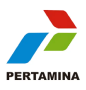
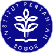


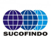

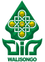

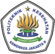

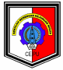
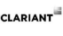

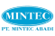
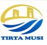
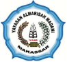
LAYANAN KAMI
Pendampingan implementasi, penyusunan dokumen, audit internal, hingga persiapan sertifikasi ISO.
Pelajari Layanan →Pendampingan akreditasi laboratorium, lembaga inspeksi, LSP, dan LSPro sesuai standar yang berlaku.
Program Public Training, In House Training, Executive Training, dan Private Training berbasis standar ISO.
Program sertifikasi kompetensi personel pada bidang mutu, K3, lingkungan, laboratorium, dan bidang terkait.
PRODUK KAMI
Aplikasi dan platform yang kami kembangkan untuk mendukung pengelolaan sistem manajemen secara modern dan efisien.
Platform digital terintegrasi untuk pengelolaan dokumen, audit internal, monitoring ketidaksesuaian, dan pelaporan sistem manajemen ISO secara real-time.
Konsultasikan DCS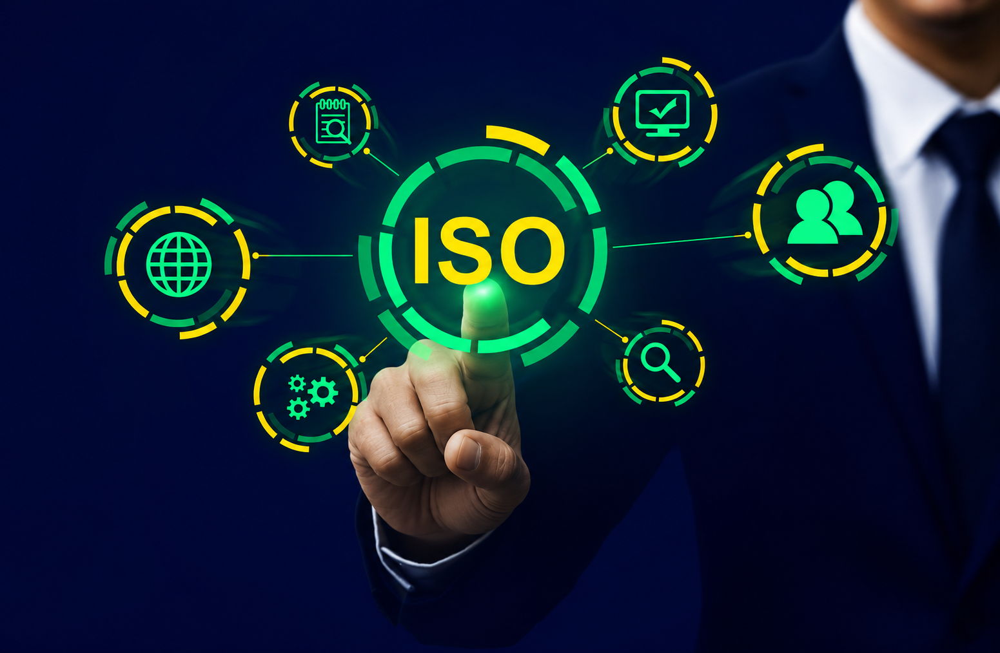
Solusi digital untuk pengelolaan dokumen akreditasi laboratorium, mencakup manajemen metode uji, rekaman, dan laporan hasil uji secara sistematis.
Konsultasikan LMSBIDANG PELATIHAN
ISO 9001 dan penerapan QMS untuk berbagai sektor industri
ISO 45001 dan SMK3 untuk lingkungan kerja yang aman
ISO 14001 untuk pengelolaan dampak lingkungan organisasi
ISO/IEC 17025 untuk akreditasi laboratorium pengujian
ISO 27001 untuk perlindungan aset informasi organisasi
ISO 50001 untuk efisiensi dan kinerja energi organisasi
KEUNGGULAN KAMI
Dengan pengalaman lebih dari 20 tahun, INOVASS telah membuktikan komitmen dalam mendampingi ratusan organisasi meraih standar internasional.
Tim konsultan bersertifikasi internasional dengan rekam jejak lebih dari 20 tahun
Metodologi kerja yang sistematis dari analisis hingga implementasi dan sertifikasi
Layanan lengkap dari konsultasi, pelatihan, audit, hingga pengembangan sistem digital
Didukung jaringan mitra lembaga sertifikasi dan akreditasi terpercaya di Indonesia
BAGAIMANA KAMI BEKERJA
Identifikasi kebutuhan, ruang lingkup, dan tujuan organisasi
Penilaian kesenjangan antara kondisi saat ini dan persyaratan standar
Pendampingan penyusunan sistem, dokumentasi, dan pelatihan tim
Pendampingan audit sertifikasi hingga organisasi meraih sertifikat
BERITA & INSIGHT
Standar ISO 9001 mengalami pembaruan signifikan. Pahami perubahan utama dan langkah persiapan yang perlu dilakukan.
Baca Selengkapnya →
Audit internal yang efektif adalah kunci keberhasilan sistem manajemen. Kenali kesalahan yang sering terjadi.
Baca Selengkapnya →
Transformasi digital membuka peluang baru dalam pengelolaan sistem manajemen yang lebih efisien dan terukur.
Baca Selengkapnya →TESTIMONI
"INOVASS mendampingi kami dengan sangat profesional. Proses sertifikasi ISO 9001 berjalan lancar dan tepat waktu."
"Tim konsultan INOVASS sangat kompeten dan responsif. Mereka benar-benar memahami kebutuhan laboratorium kami."
"Pelatihan yang diberikan sangat aplikatif. Peserta langsung dapat mengimplementasikan materi di tempat kerja."
"Pendampingan INOVASS membantu kami memahami gap analysis dengan jelas dan solusi yang terstruktur."
"Dengan bantuan INOVASS, kami berhasil meraih akreditasi KAN untuk laboratorium pengujian kami."
"INOVASS mendampingi kami dengan sangat profesional. Proses sertifikasi ISO 9001 berjalan lancar dan tepat waktu."
"Tim konsultan INOVASS sangat kompeten dan responsif. Mereka benar-benar memahami kebutuhan laboratorium kami."
FAQ
Durasi bervariasi tergantung kesiapan organisasi, umumnya 3–6 bulan untuk ISO 9001. INOVASS menyesuaikan timeline dengan kondisi dan kebutuhan setiap klien.
Ya, INOVASS telah mendampingi berbagai instansi pemerintah, kementerian, dan lembaga negara dalam penerapan standar ISO dan sistem manajemen.
Kami menyediakan pelatihan untuk berbagai standar ISO, pelatihan auditor internal, awareness training, dan program pelatihan khusus sesuai kebutuhan organisasi.
Ya, INOVASS menyediakan layanan konsultasi hybrid — tatap muka maupun online — untuk memastikan fleksibilitas dan kenyamanan klien di seluruh Indonesia.
Hubungi kami melalui formulir kontak atau langsung WhatsApp. Tim kami akan merespons dalam 1x24 jam untuk menjadwalkan konsultasi awal gratis.
Kami berkomitmen memberikan pendampingan terbaik. Tingkat keberhasilan klien kami mencapai 98% berdasarkan rekam jejak selama lebih dari 20 tahun.
Konsultasikan kebutuhan organisasi Anda secara gratis. Tim ahli kami siap membantu merancang solusi yang tepat.